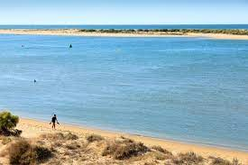
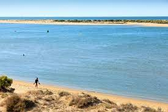
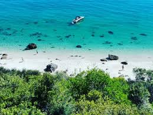
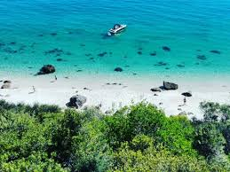

Enjoy a beach holiday In Europe
El Rompido, Huelva, Andalucía
THuelva’s Costa de La Luz ranges from Spanish all-inclusives near the Portuguese border to wild dunes in the east. Midway, around El Rompido, there’s something reminiscent of olden-day Devon: golden, loved and tidy, with golf, and bucket and spade shops, trimmed hedges, and low-rise hotels serving buffet meals.
The beach is long, with icing-sugar sand, backed by pines and trails, and dotted with chiringuitos (beach bars) providing shade and plates of famous Huelva prawns. The sea is calm, thanks to the star attraction, a glorious 12km spit – La Flecha – Flechamar ferry (April-October). Pristine, with a spine of dunes, it has two more beaches (including a nudist area) but no facilities.
 



Praia dos Galapinhos, Setúbal
If it was paradise that Portugal’s early explorers set off across the oceans to find, they could have saved themselves a journey. Because in Praia dos Galapinhos, they had the real deal right on their doorstep: white sands, forested hillsides, crystalline waters, empty space, stunning sunsets.
There’s just one (minor) downside: access is via a rocky, vertiginous path or, at low-tide, an athletic shoreline scramble. The upside, of course, is that the beach is far less busy than it should be. Pack everything you need because opportunities for replenishment are minimal.

 
